교통기사 (2008-05-11 기출문제)
1과목: 교통계획
1. 다음 중 교통의 기능이 아닌 것은?
- 교통은 유사시 국가방위에 중요한 역할을 한다.
- 교통은 생산성 향상에 기여하고, 생산비를 증가시킨다.
- 교통은 사람 및 재화의 이동을 촉진시켜 지역의 균형발전에 기여한다.
- 교통은 도시화를 촉진시키고 대도시와 주변도시를 유기적으로 연결시킨다.
(정답률: 100%)

2. 서울시 상계동 지역의 한 주민이 옷을 사기 위해 동대문시장으로 갈 때 버스와 지하철의 선택모형을 구하고자 2항로짓(Logit)모형을 적용하고자 한다. UB (버스의 효용함수값)는 -0.670, US(지하철의 효용함수값)는 -0.870으로 산출되었다. 각 교통수단에 대한 선택확률(PB, PS)은?
- PB= 0.450, PS= 0.550
- PB= 0.550, PS= 0.450
- PB= 0.435, PS= 0.565
- PB= 0.565, PS= 0.435
(정답률: 알수없음)
3. 시내 백화점들의 주차특성을 조사한 결과 주차발생 원단위가 5.24(대/1000m2/h), 주차이용효율이 80%, 신축 후 주차대수의 연평균증가율이 5%로 나타났다. 신축예정인 어느 백화점의 건물연면적이 45,000m2 일 때 목표연도(10년 후)의 주차수요는?
- 약 290대
- 약 370대
- 약 480대
- 약 530대
(정답률: 알수없음)
4. 다차로도로를 주행하는 차량의 평균통행속도에 영향을 미치는 요인과 가장 관계가 먼 것은?
- 차로폭
- 평면선형과 종단선형
- 중앙분리대의 설치 여부
- 신호등 밀도
(정답률: 94%)
5. 사람통행 실태조사 결과를 검증하거나 보완하기 위해 실시하는 방법으로 보통 남북선과 동서선을 간선도로 상에 그어 이 선상에 위치한 교차로를 통과하는 차량을 조사하는 방법은?
- 폐쇄선조사
- 노측면접조사
- 차량번호판조사
- 스크린라인조사
(정답률: 85%)
6. 하나의 Trip에는 몇 개의 Trip end가 존재하는가?
- 1개
- 2개
- 3개
- 4개
(정답률: 77%)
7. 통행분포방법 중 성장률법에 대한 설명으로 옳은 것은?
- 균일성장률법은 평균성장률법보다 훨씬 정밀한 접근방법이다.
- 평균성장률법은 예측된 장래의 통행량을 현재의 통행량으로 나눈 값으로 장래의 통행분포량을 추정하는 방법이다.
- 통행분포방법 가운데 이해하기 쉽고 적용이 용이한 방법으로 프라타법, 퍼네스법, 반복배분법, 분할배분법 등이 있다.
- 현재의 통행자의 통행형태가 장래에도 똑같다는 가정에서 출발하기 때문에 사회경제활동이 급격히 변하는 지역에서는 그 적합성이 떨어진다.
(정답률: 알수없음)
8. 통행비용이 가장 적게 소요되는 경로를 택한다는 기본 전제를 이론의 배경으로 한 통행배분(traffic assignment) 모델은?
- All-or-Nothing Model
- Entropy Model
- Flow-independent
- OD pair Model
(정답률: 92%)
9. 자동차에 사람이나 화물을 실은 채 철도로 운반하는 복합교통시스템은?
- Piggyback 시스템
- Car Ferry
- Container
- 복합버스 시스템
(정답률: 알수없음)
10. 교통망의 구성요소로서 도로망의 경우에는 교차점이나 인터체인지 그리고 철도망의 경우에는 역에 해당되는 것을 무엇이라 하는가?
- 결절점
- 경로
- 수송로
- 교차점
(정답률: 알수없음)
11. 교통사업평가시 고려되는 차량운행비(Vehicle Operating Costs)중 고정비(Fixed Cost)가 아닌 것은?
- 운전사 임금
- 보험료
- 세금
- 연료비
(정답률: 알수없음)
12. 다음 중 타 교통수단과 통행로를 공유하고 있는 버스시스템에 버스 우선기법을 도입할 시 나타날 수있는 효과와 가장 관계가 먼 것은?
- 시설비용 감소
- 정시성 확보
- 신속성 증가
- 운행 비용 감소
(정답률: 알수없음)
13. 어느 도심지의 주차요금에 대한 수요탄력치가 -0.2이며, 이 지역의 피크 한시간당 주차요금이 3,000원일 때 주차수요는 10,000대가 된다. 주차요금이 25%인상될 때 수요의 감소량은 얼마인가?
- 250대
- 500대
- 750대
- 1000대
(정답률: 알수없음)
14. 택시 수요함수가 아래 공식과 같다고 할 때 지하철 요금을 20% 인상하였을 경우 택시 수요는?(단, 택시 및 지하철 요금은 각각 1 이라고 가정)
- 택시수요가 약 5% 증가한다.
- 택시수요가 약 7% 증가한다.
- 택시수요가 약 9% 증가한다.
- 택시수요가 약 11% 증가한다.
(정답률: 알수없음)
15. 대중교통수단에 관한 설명 중 옳지 않은 것은?
- 대중교통은 대중을 위한 서비스이므로 서비스의 형평한 분배와 광범위한 분배를 위해 정부의 개입이 필요하다.
- 버스는 정시성이 부족하며 노선조정이 어렵다.
- 지하철은 쾌적성과 기동성은 우수하지만, 재량성,신속성이 부족하다.
- 대중교통수산은 많은 승객을 신속하게 수송할 수 있어야 한다.
(정답률: 100%)
16. 중복 산정을 피하기 위해 경제성 평가에서 항상 제외되는 비용 항목은?
- 요금
- 건설비
- 차량운행비용
- 주차료
(정답률: 50%)
17. 지구분할(Zoning)의 원칙에 관한 설명 중 옳지 않은 것은?
- 존안에 다른 존이 포함되지 않아야 한다.
- 존 내부의 통행이 많아야 한다.
- 존의 모양은 원형에 가까워야 한다.
- 가능한 한 지형적이거나 행정적인 경계선을 사용해야 한다.
(정답률: 90%)
18. 4단계 교통수요추정방법에 대한 설명으로 옳지 않은 것은?
- 계획가나 분석가의 주관이 작용할 때도 있다.
- 총체적 자료에 의존하기 때문에 통행자의 총체적ㆍ평균적 특성만 산출될 뿐 행태적 측면은 거의 무시된다.
- 현재 교통 여건을 지배하고 있는 교통체계의 메커니즘이 장래에는 크게 변한다는 기본적인 가정을 토대로 하고 있다.
- 통행발생, 통행분포, 교통수단선택, 통행배정의 4단계로 나누어 순서적으로 통행량을 구하는 기법이다.
(정답률: 100%)
19. 중량전철(지하철 등)에 비해 경전철(LRT)의 특성은?
- 소음이 매우 심하다.
- 수송용량이 많다.
- 배차간격을 줄일 수 있다.
- 주행속도가 빠르다.
(정답률: 93%)
20. 다음 중 개별행태모형에 대한 설명으로 틀린 것은?
- 개인이 통행행태 관련자료를 활용한다.
- 타 존에 적용이 가능하다.
- 모델의 구조는 결정적 모형이다.
- 수요추정과정의 통합이 가능하다.
(정답률: 91%)
2과목: 교통공학
21. 운전자가 실제로 느끼는 속도이며 속도규제, 신호기설치 위치선정, 신호시간계산, 사고분석시 등에 이용되는 속도는?
- 주행속도
- 자유속도
- 구간속도
- 지점속도
(정답률: 92%)
22. 신호 교차로에서 녹색시간을 설계할 때 고려되어야 할 사항이 아닌 것은?
- 접근로의 교통량
- 횡단보도 길이
- 보행자의 속도
- 차량의 속도
(정답률: 알수없음)
23. 교통류의 특성에서 평균 가속도에 관한 가속도의 표준편차를 무엇이라 하는가?
- 교통강도
- 충격편차
- 수락편차
- 가속소음
(정답률: 알수없음)
24. 차량이 90km/h의 속도로 달리고 있다. 운전자의 인지/반응시간이 2.5초라고 할 때 마찰계수가 0.3인 평탄지 도로에서의 최소정지시거는 대략 얼마인가?
- 145m
- 158m
- 162m
- 169m
(정답률: 42%)
25. 2km 구간의 도로에서 통과차량들의 통행시간을 측정한 결과 100초, 110초, 90초, 95초, 90초 이었다. 이 구간에서의 시간평균속도와 공간평균속도는?
- 시간평균속도 : 73.8km/h, 공간평균속도 : 74.7km/h
- 시간평균속도 : 74.7km/h, 공간평균속도 : 73.8km/h
- 시간평균속도 : 74.7km/h, 공간평균속도 : 74.2km/h
- 시간평균속도 : 73.8km/h, 공간평균속도 : 74.2km/h
(정답률: 37%)
26. 다음 중 용량보정계수에 포함되지 않는 것은?
- 대형차 혼입율
- 차로수
- 측방여유폭
- 종단경사
(정답률: 알수없음)
27. 어떤 도로상에서 시간당 평균 도착 교통량이 360대 일 경우, 20초 동안에 4대가 도착할 확률은?
- 0.135
- 0.271
- 0.⑤3
- 0.090
(정답률: 50%)
28. 독립 신호교차로에 유입되는 교통량이 변화가 심하고 시간별 변동 패턴이 다를 때 가장 적합한 신호제어 방식은?
- 감응제어
- 정주기제어
- 연동제어
- 고정식제어
(정답률: 90%)
29. 다음 중 PHF(Peak Hour Factor)에 대한 설명으로 틀린 것은?
- 첨두시간내에서의 교통량의 변동 정도를 알 수 있다.
- 보통 1보다 큰 값을 가진다.
- 교통류 분석시간단위가 15분보다 짧으면 PHF는 적어진다.
- 교통류 분석시간단위가 15분보다 짧으면 교통시설의 규모를 결정하는 때에 과도설계가 될 가능성이 있다.
(정답률: 90%)
30. 다음 그림은 Greenshields의 속도 - 밀도 모형에서 유도된 교통량과 밀도의 관계를 나타낸 것이다. 관계식으로 옳은 것은? (단, μf = 자유류의 속도)
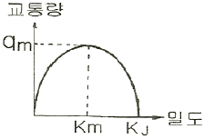
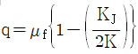
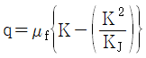
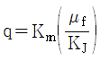
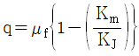
(정답률: 100%)
31. 다음 그림과 같이 구간별로 교통류 상태가 다를 때, 그 경계면 AA의 충격파 속도는?
- 3.75 km/시
- 4.00 km/시
- 5.43 km/시
- 7.25 km/시
(정답률: 74%)
32. 교통류(traffic flow)의 특성을 결정하는 주요 요소가 아닌 것은?
- 차두시간 및 차간시간
- 차량 가속도
- 속도 및 통행시간
- 밀도
(정답률: 알수없음)
33. 이동차량법(Moving vehicle method)에 의한 한 도로의 일방향의 통행시간조사에서 조사차량의 평균통행시간은 3.5분이었다. 조사 중 평균 2대의 차량이 조사차량을 추월하였다. 조사방향의 교통량이 1,200대/시간 일 때 이 방향에서의 전차량의 평균 통행시간은?
- 3.42분
- 3.48
- 3.52분
- 3.58분
(정답률: 알수없음)
34. 임계밀도(Critical density)상태 때의 교통량은?
- 0 이다.
- 최대 교통용량이다.
- 용량보다 적다.
- 밀도와 상관없다.
(정답률: 100%)
35. 다음 중 신호교차로의 포화교통량 산정을 위한 이상적인 조건에 해당하지 않는 것은?
- 차로폭 3.0m 이상
- 교통류는 모두 승용차로만 구성
- 구배가 0%
- 교차로 부근 100m 이내에 버스정류장이 없을 것
(정답률: 100%)
36. 차량이 시속, 60km로 주행하다가 300m를 주행하고 정지하였다면 감속율은?
- 0.41 m/sec2
- 0.46 m/sec2
- 0.51 m/sec2
- 0.56 m/sec2
(정답률: 46%)
37. 편도 4차로 도로에서 편도 교통류율이 7800pcph이고, 평균 속도가 40km/h 일 경우 밀도와 차간시간(Time Gap)은? (평균차량의 길이는 4m 이다.)
- 52.32 대 /km/ 차로, 1.75초
- 48.75 대 /km/ 차로, 1.84초
- 48.75 대 /km/ 차로, 1.49초
- 52.32 대 /km/ 차로, 1.92초
(정답률: 알수없음)
38. 교통체계관리기법(TSM)의 특성에 대한 설명 중 옳지 않은 것은?
- 단기적인 투자사업이다.
- 소규모 투자사업이다.
- 기존 시설물 활용보다 새로운 교통시설물을 건설한다.
- 교통요소 간의 유기적 연관성을 도모한다.
(정답률: 100%)
39. 신호등 설치 교차로에서의 황색신호시간 설계시 고려되는 요소로 맞지 않는 것은?
- 운전자의 반응시간
- 차량의 길이
- 교통량
- 교차로의 폭원
(정답률: 90%)
40. 연속된 신호교차로에서 첫 번째 신호등의 녹색신호시작시간과 두 번째 신호등의 녹색신호시작시간과의 시간간격을 의미하는 것은?
- 현시 (Phase)
- 분할시 (Split)
- 유효녹색시간 (Effective green time)
- 옵셋(Offset)
(정답률: 알수없음)
3과목: 교통시설
41. 다음의 도로의 부속시설에 대한 설명 중 옳지 않은 것은?
- 고속도로에서 우측 길어깨의 폭원이 2.50m 미만일 경우에는 비상주차대를 설치해야 한다.
- 긴급제동시설은 본선 도로의 우측에 설치하는 것이 원칙이다.
- 휴게시설의 배치는 모든 휴게시설 상호간에 표준 10km, 최대 50km 정도 떨어지는 것이 바람직하다.
- 버스정류소는 버스승객의 승하차를 위하여 본선의 외측차로를 그대로 이용할 경우 그 공간을 의미한다.
(정답률: 알수없음)
42. 다음 중 교통안전표지에 속하지 않는 것은?
- 주의표지
- 규제표지
- 지시표지
- 이정표지
(정답률: 79%)
43. 편도 2차로 톨게이트 상류에서 조사한 첨두시간 교통수요는 6650대 이었다. 톨게이트를 지난 후 도로의 용량이 5000대/시간 이며 톨게이트의 요금징수시간이 차량당 평균 10초 이다. 도로운영에 톨게이트를 통고하는 시간당 차량수가 도로 용량과 일치하게 하려면, 톨게이트의 적정 징수소의 수는?
- 14개소
- 10개소
- 7개소
- 5개소
(정답률: 알수없음)
44. 설계속도가 60km/H 일 때 확보해야 할 정지시거는?
- 65m
- 85m
- 110m
- 140m
(정답률: 90%)
45. 도로의 주요구조부를 보호하거나 차도의 효율성을 증대시키기 위하여 차도에 접하여 설치하는 부분은?
- 변속차로
- 보도
- 교통섬
- 길어깨
(정답률: 100%)
46. 최소규모 노외주차장의 경우 주차면 1면당 면적이 최소가 되는 주차방식은?
- 30˚ 전진주차
- 60˚ 전진주차
- 60˚ 후진주차
- 90˚ 후진주차
(정답률: 알수없음)
47. 도시지역 간선도로 보도의 최소 폭으로 옳은 것은?
- 4.0m
- 3.0m
- 2.25m
- 1.5m
(정답률: 알수없음)
48. 다음 중 주차수요 예측시 적용하는 주차발생원단위법의 요소가 아닌 것은?
- 건물연면적(m2)
- 첨두시 주차발생원단위
- 첨두시 주차집중률
- 주차이용효율
(정답률: 알수없음)
49. 4차로 이상의 도시고속도로 및 지방부 일반도로에 설치하는 중앙분리대의 최소폭은?
- 도시고속도로 1.5m,일반도로 1.0m
- 도시고속도로 2.0m,일반도로 1.5m
- 도시고속도로 2.5m,일반도로 2.0m
- 도시고속도로 3.0m일반도로 2.5m
(정답률: 100%)
50. 평면교차로에서의 도류화설계를 위한 기본원칙과 가장 거리가 먼 것은?
- 곡선부는 적절한 곡선변경과 폭을 가져야 한다.
- 운전자가 한번에 한가지 이상의 의사결정을 하지 않도록 해야 한다.
- 교통제어시설은 도류화의 일부가 아니므로 이를 배제하여 교통섬을 설계하여야 한다.
- 속도와 경로를 점진적으로 변화시킬 수 있도록 접근로의 단부를 처리해야 한다.
(정답률: 94%)
51. 다음 그림은 도류로(導流路)의 설치 예이다. A도로의 설계 속도가 60 kph이고, B도로의 설계 속도가 40 kph일 때 곡선반경은 얼마가 적당한가? (단, 곡선의 편경사는 0 이고, 마찰계수는 0.12 이다.)
- 240m
- 200m
- 130m
- 100m
(정답률: 54%)
52. 다음 ( )안에 알맞은 말은?
- 작다.
- 크다.
- 같다.
- 일률적으로 말할 수 없다.
(정답률: 94%)
53. 고속도로인 경우 비상주차대의 설치 간격은 얼마를 표준으로 하는가?
- 300m
- 550m
- 750m
- 900m
(정답률: 84%)
54. 설계속도 100km/h에 대한 최소평면곡선반경을 구한 값은? (단, 편경사 0.08, 마찰계수 0.25)
- 313m
- 245m
- 239m
- 213m
(정답률: 54%)
55. 다음 도로 중 일반적으로 버스정차대(Bus Bay)를 설치하지 않아도 되는 도로는?
- 고속도로
- 주간선도로
- 도시고속도로
- 국지도로
(정답률: 90%)
56. 도로의 기능에 따른 구분 중 이동성이 가장 낮은 도로는?
- 집산도로
- 주간선도로
- 국지도로
- 자동차전용도로
(정답률: 80%)
57. 다음 중 설계시간교통량(K30)의 일반적인 특성이 아닌 것은?
- 연평균일교통량의 증가와 함께 그 대상도로 구간의 K30 은 일반적으로 감소한다.
- K30이 높을수록 교통량의 변화가 심하다.
- 대상도로 구간 인접지역 개발이 많이 이루어질수록 K30은 증가한다.
- K30은 일반적으로 관광도로에서 가장 높은 값을 나타내며 지방지역도로, 도시외곽도로, 도시내 도로 순으로 낮은 값을 갖는다.
(정답률: 알수없음)
58. 다음 조사항목 중 피조사자로부터 직접 얻을 수 없는 것은?
- 보행거리
- 주차목적
- 주차장 회전율
- 주차시간
(정답률: 알수없음)
59. 다음 그림과 같은 종단곡선이 있다. 이 종단곡선의 시점(VPC)로부터 20m 지점에서의 표고는?
- 930.25m
- 930.28m
- 930.31m
- 930.33m
(정답률: 알수없음)
60. 완화곡선의 종류로 부적합 것은?
- 클로소이드 곡선
- 렘니스케이트 곡선
- 3차 포물선
- 2차 포물선
(정답률: 90%)
4과목: 도시계획개론
61. 다음 중 도시개발법에 의한 도시개발사업의 설명으로 맞지 않는 것은?
- 도시계획사업으로서 도시개발사업을 통하여 복합적 기능을 갖는 도시를 종합적ㆍ체계적으로 개발을 할 수 있다.
- 도시개발사업은 반드시 공공에 의하여 시행된다.
- 개발계획에는 교통처리계획, 인구수용계획, 환경보전계획 등이 포함되어야 한다.
- 도시개발사업은 기존의 수용 또는 사용이 아닌 환지방식으로도 시행할 수 있다.
(정답률: 72%)
62. 위성도시 육성에 관한 내용 중 관계가 먼 것은?
- 모체도시로 기능을 집중시킨다.
- 거대도시의 인구집중에 따르는 제 폐단을 시정한다.
- 대도시 주변에 중소도시를 육성한다.
- 대도시를 건전하게 발달시킨다.
(정답률: 36%)
63. 토지이용을 합리화ㆍ구체화하고 도시 또는 농ㆍ산ㆍ어촌의 기능의 증진, 미관의 개선 및 양호한 환경을 확보하기 위하여 수립하는 계획은?
- 농어촌 발전계획
- 제1종지구단위계획
- 도시경관계획
- 도시환경계획
(정답률: 10%)
64. P.Geddes가 제안한 개념으로, 인접한 두 개 이상의 도시가 연속적으로 이어져 연담화된 도시형태를 뜻하는 것은?
- Metropolis
- Megalopolis
- Conurbation
- Ecumenopolis
(정답률: 알수없음)
65. 주거지역의 도로율 기준으로 적합한 것은?
- 10% 이상 20% 미만
- 15% 이상 25% 미만
- 2⑤ 이상 30% 미만
- 3⑤ 이상 40% 미만
(정답률: 37%)
66. 현재 인구가 50만명인 도시가 있다. 매년 이 도시의 인구가 25,000 명씩 증가할 때, 12년 후의 인구를 등차급수법에 의해 산정하면 몇 명이 되는가?
- 150만명
- 120만명
- 100만명
- 80만명
(정답률: 알수없음)
67. 다음 중 도시의 내부구조를 설명하는 이론이 아닌 것은?
- 동심원이론
- 중심지이론
- 선형이론
- 다핵심이론
(정답률: 42%)
68. 도시개발정책 중 성장관리 정책의 목적이 아닌 것은?
- 도시의 외연적 확산 방지
- 도시주변의 자연환경 보존
- 도시내 개발격차의 시정
- 도시성장의 동결
(정답률: 59%)
69. 지역계획의 법주에 속하지 않는 계획은?
- 특정지역개발계획
- 수도권개발계획
- 토지구획정리사업계획
- 광역권개발계획
(정답률: 알수없음)
70. 가로망 구성 형태와 그 특징에 대한 설명 중 옳지 않은 것은?
- 격자형 : 지형이 평탄한 도시에 적합, 도로의 다양성 결여
- 방사형 : 중심지를 기점으로 주요간선도로에 따라 도시개발축 형성
- 방사환상형 : 규모가 작은 소도시에 많이 나타나며 도심부의 교통집중이 가장 두드러짐
- 혼합형 : 두 가지 이상 혼합된 형으로 도심부는 격자형, 도시 외곽부는 방사환상형이 일반적
(정답률: 알수없음)
71. 다음 중 토이지용의 입지배분시 주거지역의 입지조건으로 고려할 사항과 가장 거리가 먼 것은?
- 도시기반시설
- 접근성
- 지형조건
- 경제성
(정답률: 50%)
72. 다음 중 도시화의 일반적인 현상으로 올바르지 않은 것은?
- 농촌지역의 인구가 이동하여 도시지역에 집중하는 현상
- 도시적 성격의 산업과 외형을 지니는 지역의 면적이 확산되는 현상
- 도시의 인구밀도가 높아지고 건축물이 고밀고충화 하는 현상
- 교통수산의 발달로 교외에 소규모의 불량주거지역이 난립하는 현상
(정답률: 알수없음)
73. 사회간접자본에 대하여 제3섹터 혹은 민간회사가 시설을 건설한 후 일정기간 동안 소유 및 운영을 하며, 일정기간 경과 후 소유권 및 운영권이 정부에 귀속되는 민간자본 투자형태는?
- BOO(Build-Own-Operate)
- BOT(Build-Own-Transfer)
- BTO(Build-Transfer-Operate)
- BLT(Build-Lease-Transfer)
(정답률: 62%)
74. 경제기반이론(Economic Base Theory)에서 기간산업(Basic industry)을 판별하는 방법으로 가장 보편적인 것은?
- 지역승수(Regionnal Multiplier)
- 입지상(Location Quotient)
- 최대고용 요구량법
- 산업연관표(input-output Table)
(정답률: 62%)
75. 도시계획시설로서의 도로의 규모별 구분에 따른 기준 내용이 옳지 않은 것은?
- 소로1류 - 폭 10m 이상 12m 미만인 도로
- 중로1류 - 폭 15m 이상 20m 미만인 도로
- 대로1류 - 폭 35m 이상 40m 미만인 도로
- 광로1류 - 폭 70m 이상인 도로
(정답률: 알수없음)
76. 지체장애인 전용주차장의 주차단위구획의 주차대수 1대에 대한 최소 기준으로 맞는 것은?(단, 평행주차형식 외의 경우)
- 너비 2m, 길이 5m
- 너비 2m, 길이 5.5m
- 너비 3.3m, 길이 5m
- 너비 3.3m, 길이 6m
(정답률: 50%)
77. 기존 시가지의 인구밀도가 100인/ha 이며, 현재 5만인이 거주하는 도시가 있다. 10년 후 도시의 계획인구가 10만인이며 계획상 기존 시가지의 인구밀도를 120인/ha 로 조정하고, 나머지 인구는 신시가지를 조성하여 100인/ha 로 계획한다면 신시가지의 개발 면적은 얼마가 적당한가?
- 400ha
- 500ha
- 600ha
- 1000ha
(정답률: 알수없음)
78. 공동구(共同構)에 관한 설명 중 옳지 않은 것은?
- 가로와 도시의 미관을 개선할 수 있다.
- 노면의 내구력이 감소하여 노면유지비가 증대된다.
- 빈번한 노면굴착에 의한 교통장애를 제거할 수 있다.
- 각종 공작물의 관리자가 서로 달라 개설의 필요 정도 및 시기에 대하여 일치가 어렵다.
(정답률: 알수없음)
79. 혼잡한 주요도로에 차량과 보행자의 원활한 소통을 도모하기 위해 설치한 광장은?
- 근린광장
- 교차점광장
- 지하광장
- 역전광장
(정답률: 59%)
80. 다음과 같은 특징을 갖는 국지도로는?
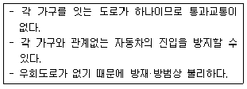
- 쿨데삭(cul-de-sac)
- 루프(loop)형
- 격자형
- T자형
(정답률: 70%)
5과목: 교통관계법규
81. 다음 중 도로법에 따른 도로의 종류에 해당되지 않는 것은?
- 고속국도
- 일반국도
- 간선도로
- 구도
(정답률: 알수없음)
82. 다음 중 신설 또는 개축시 당해 도로를 통행하는 자로부터 통행료를 받을 수 있는 도로에 해당되지 않는 것은?
- 당해 도로를 통행하는 자가 그 도로의 통행으로 인하여 현저히 이익을 받는 도로
- 관광을 목적으로 하는 도로
- 육지와 섬사이 또는 섬과 섬사이를 연결하는 도로
- 그 부근에 통행할 다른 유료도로가 있어 당해 도로의 통행을 불가피하게 하지 아니하는 도로
(정답률: 50%)
83. 교통유발부담금의 부과대상 시설물의 규모 기준은?
- 각층 바닥면적의 합계가 500m2 이상인 시설물
- 각층 바닥면적의 합계가 1000m2 이상인 시설물
- 각층 바닥면적의 합계가 2000m2 이상인 시설물
- 각층 바닥면적의 합계가 3000m2 이상인 시설물
(정답률: 알수없음)
84. 도로원표에 관한 설명 중 옳지 않은 것은?
- 서울특별시의 도로원표의 위치는 세종로 광장의 중앙으로 한다.
- 서울특별시의 도로원표는 서울특별시장이 관리한다.
- 도로원표의 설치기준은 국토해양부령으로 정한다.
- 군에는 도로원표를 설치하지 않는다.
(정답률: 37%)
85. 폭우, 폭설, 안개 등으로 가시거리가 100미터 이내인 때에는 평상시의 최고속도에서 얼마를 줄인 속도로 운행하여야 하는가?
- 100분의 50
- 100분의 40
- 100분의 30
- 100분의 20
(정답률: 34%)
86. 시가화조정구역의 시가화 유보기간은?
- 5년 이내
- 10년 이내
- 15년 이내
- 5년 이상 20년 이내
(정답률: 알수없음)
87. 다음 중 노외주차장의 출구와 입구의 설치 금지 장소에 해당되지 않는 것은?
- 노인복지시설의 출입구로부터 20m 이내의 도로의 부분
- 종단구배가 6%를 초과하는 도로
- 너비 4m 미만의 도로(주차대수 200대 이상인 경우에는 너비 10m 미만의 도로)
- 아동전용시설의 출입구로부터 20m 이내의 도로의 부분
(정답률: 알수없음)
88. 다음 중 주차장법 상 도로의 노면 및 교통광장외의 장소에 설치된 것으로서 일반의 이용에 제공 되는 것으로 정의되는 주차장의 종류는?
- 노상주차장
- 부설주차장
- 노외주차장
- 기계식주차장
(정답률: 37%)
89. 다음 중 차로와 차로를 구분하기 위해 그 경계지점을 안전표지에 의하여 표시한 선을 의미하는 것은?
- 연석선
- 중앙선
- 차선
- 경계선
(정답률: 47%)
90. 국토의 계획 및 이용에 관한 법률에 의한 용도지역별 용적률의 최대한도가 옳게 연결된 것은?
- 주거지역 : 500% 이하
- 상업지역 : 1300% 이하
- 공업지역 : 700% 이하
- 녹지지역 : 150% 이하
(정답률: 19%)
91. 다음 중 도로교통법에 따라 횡단보도의 용어 정의로 가장 알맞은 것은?
- 보행자가 도로를 횡단할 수 있도록 안전표지로써 표시한 도로의 부분이다.
- 차도와 보도가 서로 교차하는 도로의 부분이다.
- 도로를 횡단하는 보행자나 통행하는 차마의 안전을 위하여 안전표지나 그와 비슷한 공작물로써 표시한 도로의 부분이다.
- 보도와 차도가 구분되지 아니한 도로에서 보행자의 안전을 확보하기 위하여 안전표지 등으로 경계를 표시한 도로의 가장자리 부분이다.
(정답률: 55%)
92. 다음 중 도시기본계획에 포함되는 정책방향의 대상이 되는 사항이 아닌 것은?
- 지역적 특성 및 계획의 방향ㆍ목표에 관한 사항
- 환경의 보전 및 관리에 관한 사항
- 토지의 용도별 수요 및 공급에 관한 사항
- 광역시설의 배치ㆍ규모ㆍ설치에 관한 사항
(정답률: 20%)
93. 다음 중 주차환경개선지구지정ㆍ관리계획에 포함되어야 할 사항이 아닌 것은?
- 주차환경개선지구의 관리목표 및 방법
- 주차장의 수급실태 및 이용특성
- 월별 주차장 확충 및 재원조달 계획
- 노외주차장 우선 공급 등 주차환경개선지구의 지정목적을 달성하기 위하여 필요한 조치
(정답률: 알수없음)
94. 혼잡통행료부과지역으로 지정하고자 할 때 고려해야 할 사항이 아닌 것은?
- 우회도로의 확보
- 대체교통수단의 확충
- 인근지역의 주차공급 확충
- 교통지체를 최소화 할 수 있는 징수방식
(정답률: 28%)
95. 다음의 오르막차로에 관한 기준 내용 중 ( )안에 알맞은 것은?
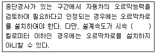
- 30
- 40
- 50
- 60
(정답률: 50%)
96. 다음 중 정차 및 주차이 금지 장소로 옳지 않은 것은?
- 교차로ㆍ횡단보도ㆍ건널목이나 보도와 차도가 구분된 도로의 보도
- 교차로의 가장자리 또는 도로의 모퉁이로부터 10미터 이내의 곳
- 안전지대가 설치된 도로에서 그 안전지대의 사방으로부터 각각 10 미터 이내의 곳
- 건널목의 가장자리로부터 10 미터 이내의 곳
(정답률: 알수없음)
97. 다음의 도로교통법 상 신호기 등의 설치 및 관리에 대한 기준 내용 중 ( )안에 해당되지 않는 자는?
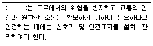
- 시장
- 광역시의 군수
- 특별시장
- 광역시장
(정답률: 42%)
98. 다음의 지역교통안전기본계획에 대한 기준 내용 중 ( )안에 알맞은 것은?
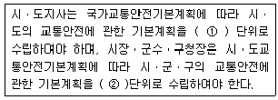
- ① 5년, ② 5년
- ① 5년, ② 3년
- ① 10년, ② 5년
- ① 10년, ② 10년
(정답률: 50%)
99. 다음의 긴급자동차에 대한 설명 중 옳지 않은 것은?
- 긴급자동차는 위험방지를 위하여 정지 또는 서행하고 있는 다른 차 앞에 끼어들 수 있다.
- 긴급자동차는 제한속도를 초과하여 운행할 수 있다.
- 긴급자동차는 앞지르기 금지장소를 무시하고 앞지르기 할 수 있다.
- 긴급자동차는 긴급한 경우에도 중앙선을 침범할 수 없다.
(정답률: 알수없음)
100. 도로의 구조ㆍ시설 기준에 관한 규칙에 규정된 도로의 횡단면을 구성하는 요소들에 대한 제원을 바르게 설명한 것은?
- 지방지역 고속도로 차로의 최속폭 : 3.5m
도시지역 일반도로 중앙분리대 최소폭 : 1.0m
도시지역 고속도로 오른쪽 길어깨의 최속폭 : 2.0m
도시지역 간선도로 보도의 최속폭 : 3.0m - 지방지역 고속도로 차로의 최속폭 : 3.0m
도시지역 일반도로 중앙분리대 최소폭 : 2.0m
도시지역 고속도로 오른쪽 길어깨의 최속폭 : 1.5m
도시지역 간선도로 보도의 최속폭 : 2.0m - 지방지역 고속도로 차로의 최속폭 : 3.5m
도시지역 일반도로 중앙분리대 최소폭 : 1.0m
도시지역 고속도로 오른쪽 길어깨의 최속폭 : 1.5m
도시지역 간선도로 보도의 최속폭 : 2.0m - 지방지역 고속도로 차로의 최속폭 : 3.0m
도시지역 일반도로 중앙분리대 최소폭 : 1.5m
도시지역 고속도로 오른쪽 길어깨의 최속폭 : 1.0m
도시지역 간선도로 보도의 최속폭 : 3.0m
(정답률: 40%)
6과목: 교통안전
101. 교통사고분석의 일반적인 목적과 거리가 먼 것은?
- 사고 많은 장소를 선별
- 사고원인을 분석하여 사고방지책을 강구하거나 사고책임을 규명
- 사고의 장소 및 시간의 변화에 따른 경험을 비교분석하여 국가의 안전정책수립을 위한 기초자료로 활용
- 예산획득 및 배정의 우선순위결정과는 무관하게 소요예산을 책정하는 기초자료로 활용
(정답률: 알수없음)
102. 사고자료의 결함은 지점개선을 위한 공학적 연구에서 만족할 만한 정보를 얻는데 장애를 가져온다. 다음 중 이러한 경우와 가장 거리가 먼 것은?
- 불충분한 보고자료
- 사고당사자들의 성별
- 사고보고서상의 지점의 불분명
- 사고보고기관의 경미한 사고는 생략되는 경향
(정답률: 100%)
103. 활주흔적(Skid mark)으로부터 제동직전의 자동차 속도를 계산하려고 한다. 다음 중 고려하지 않아도 되는 사항은?
- 노면과 타이어간의 마찰계수
- 스키드 마크의 길이
- 노면의 경사
- 차량의 무게
(정답률: 100%)
104. 비가 오는 날은 수막 현상에 의한 교통사고가 많이 발생한다. 다음 중 수막현상을 증대시키는 요인이 아닌 것은?
- 두꺼운 수막층의 깊이
- 빠른 주행 속도
- 마모된 타이어
- 무거운 축하중
(정답률: 86%)
1⑤. 자동차가 주행할 때 타이어의 공기압이 적은 상태이면 타이어 접지면이 압축되어 변형하면서 회전하므로 타이어가 물결치는 모양이 되는데 이러한 현상을 무엇이라고 하는가?
- 하드로 플래닝(hydro planing)현상
- 스탠딩 웨이브(standing wave)현상
- 스키드(skid)현상
- 드라이브(drive)현상
(정답률: 90%)
106. 교차로에서의 보행자 사고 방지를 위한 대책으로 시급하지 않은 것은?
- 횡단보도설치
- 시야 장애물 제거
- 교통섬 설치
- 미끄럼 주의 표지설치
(정답률: 알수없음)
107. 다음 중 시거의 종류에 해당되지 않는 것은?
- 추월시거
- 정지시거
- 판단시거
- 반응시거
(정답률: 84%)
108. 사고 지점도에 관한 다음의 설명 중 잘못된 것은?
- 사고가 집중적으로 발생하는 지점의 신속한 시각적 색인을 제공한다.
- 지점도는 사고건수 대신 희생자수를 나타내는 것이 일반적이다.
- 범례는 가능한 한 단순해야 한다.
- 사고 지점도는 통상 연 단위로 관리된다.
(정답률: 95%)
109. 운전면허소지자 20,000명의 지난 5년간 사고경력을 조사하였다. 전체 교통사고는 5,000건이다. 지난 5년간 3회 이상 교통사고를 일으킨 사람은 교통사고 상습자로 관리하고자 한다. 교통사고 상습자는 몇 명으로 추정되는가?
- 33명
- 44명
- 55명
- 66명
(정답률: 20%)
110. 중앙분리대를 설치하여 많이 감소시킬 수 있는 사고의 유형은?
- 측면충돌사고
- 추돌사고
- 직각 및 정면충돌사고
- 전복사고
(정답률: 100%)
111. 도로가 철도와 평면 교차할 때 안전요소인 운전자의 시거 확보를 위하여 일정 크기 이상이 교차각을 규정하고 있는데, 그 값은 최소 얼마 이상이어야 하는가?
- 30°
- 45°
- 60°
- 75°
(정답률: 100%)
112. 교통사고의 내재적 조건 중에서 사고건수가 가장 많은 것은?
- 조작
- 인지
- 판단
- 운전조건
(정답률: 알수없음)
113. 주행하는 차량의 운동량을 차량의 경로에 위치한 소모용 재료의 질량으로 전이시키는 충격완화시설은?
- 관성방호책
- 하이드라이 셀 샌드위치
- 하이드로 셀 샌드위치
- 압축유형 방호책
(정답률: 59%)
114. 교통사고 조사 목적 중에서 그 지향하는 바가 가장 단편적인 것은?
- 사고 감소
- 사고원인 규명
- 사고특성 규명
- 과실자의 판단
(정답률: 80%)
115. 차량이 도로를 벗어나 도로의 맨 끝으로부터 거리 30m, 높이 20m의 지점에 추락하였다면 추락할 때의 이 차량의 속도는 얼마인가?
- 41.26km/시
- 48.46km/시
- 53.46km/시
- 57.64km/시
(정답률: 50%)
116. 지하식 보행시설에 대한 설명으로 옳지 않은 것은?
- 건설비가 고가이다.
- 범죄의 가능성이 크다.
- 시각적으로나 물리적으로 도시미관을 해친다.
- 방향감각을 잃기 쉽다.
(정답률: 알수없음)
117. 덤프트럭이 급제동하여 평탄한 포장 도로에서 15m를 미끄러지다가 비포장 도로에서 13m를 더 미끄러지고 정차하였다면 차량이 급제동하기 시작할 때의 속도는 약 얼마인가? (단, 노면과 타이어간의 마찰계수는 포장노면에서는 0.7, 비포장노면에서는 0.5라고 한다.)
- 65.7km/h
- 78.9km/h
- 83.4km/h
- 94.5km/h
(정답률: 30%)
118. 율-품질관리법에서 가정하는 교통사고 발생분포는?
- 포아송분포
- 이항분포
- 음지수분포
- 지수분포
(정답률: 알수없음)
119. 도로의 곡선부에서 원심력을 상쇄하기 위해 편경사를 설치하고 있다. 곡선부의 편경사를 설치한 것 중 옳은 것은? (단, +는 횡단경사를 높인 부분이고, -는 낮춘 부분을 의미한다.)
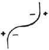
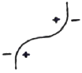
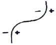
(정답률: 100%)
120. 사고경험에 기초한 사고 위험 지점 선정을 위한 기법 중 율 - 품질관리법(Rate Quality Control method)에서는 다음의 식으로 구하고자 한다. 여기서 Rc가 의미하는 것은?
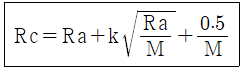
- 평균사고율
- 총교통사고율
- 등가사고율
- 한계사고율
(정답률: 93%)
이유: 교통은 국가방위와는 직접적인 연관성이 없으며, 교통은 생산성 향상과 지역의 균형발전, 도시화 촉진, 대도시와 주변도시 연결 등과 같은 기능을 가지고 있다.